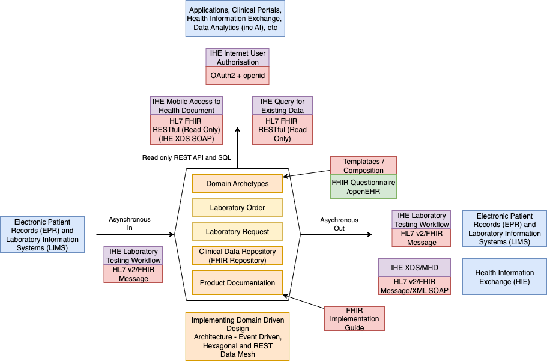
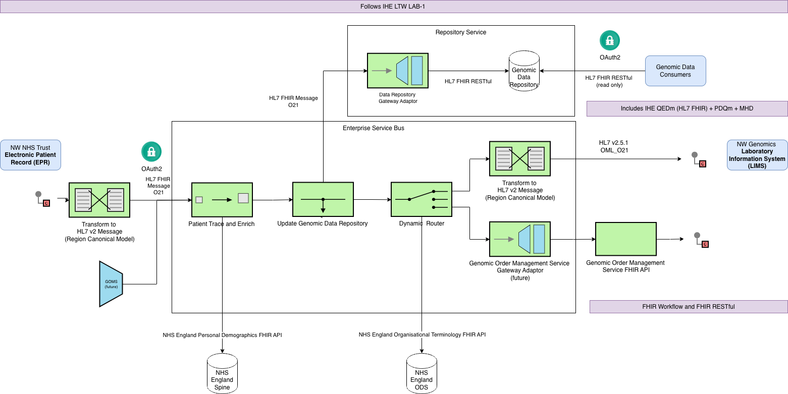
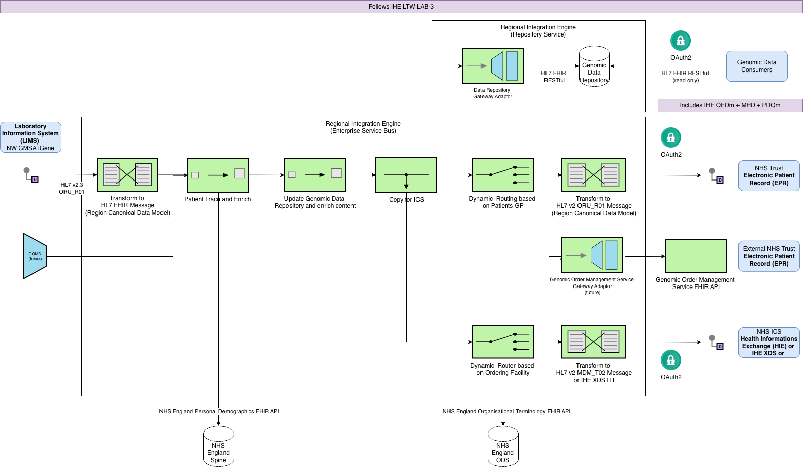
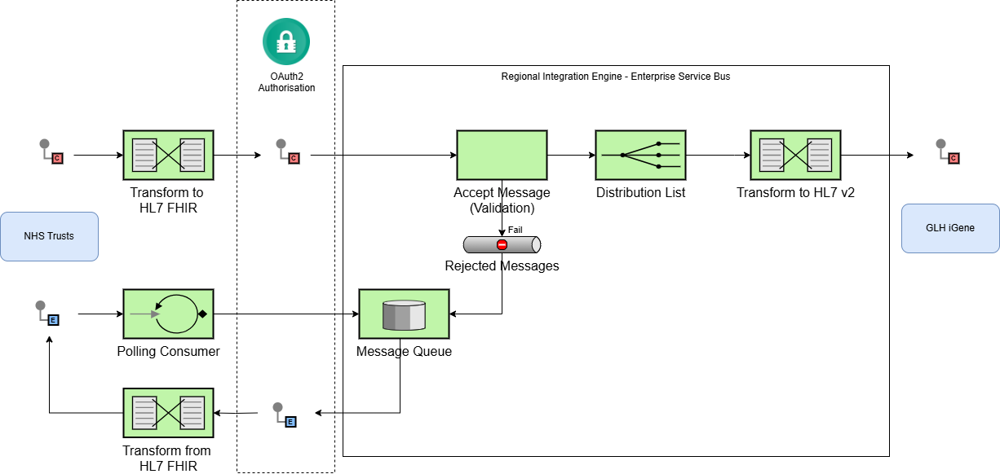

NHS North West Genomics
0.2.2 - ci-build

NHS North West Genomics
0.2.2 - ci-build

NHS North West Genomics, published by NHS North West Genomics. This guide is not an authorized publication; it is the continuous build for version 0.2.2 built by the FHIR (HL7® FHIR® Standard) CI Build. This version is based on the current content of https://github.com/nw-gmsa/nw-gmsa.github.com/ and changes regularly. See the Directory of published versions
The architecture generally follows Domain Driven Design [DDD], Domain Driven Design and Data Mesh
The general architecture is shown below:

Data Mesh
Data Sharing is based on FHIR RESTful API's, and asynchronous messaging used to deliver the orders and reports in mostly HL7 v2 and IHE Laboratory Testing Workflow (LTW) based .
The diagram below shows multiple interoperability pathways for exchanging diagnostic reports—either as structured data or documents—between systems. It maps out which standards (FHIR, HL7 v2, IHE, XDS/MHD), APIs, and NHS England national services (UGR, NIR, NRL, Genomic OMS, etc.) are involved depending on:
NHS England services are coded in blue, while currently implemented services are coded in green.
graph TD
B[Diagnostic Report Interoperabilty] --> C{"Options <br/>Both answers<br/>are likely"}
C -->|Event API| D{Existing Interface?}
C -->|Data Sharing API| E{Document <br/>or Data}
E --> |Data| Data[Structured]
E --> |Document<br/>and hybrid| Documents["Unstructured (and Clinical) Documents"]
Data --> REST["FHIR RESTful API<br/>IHE Query for Existing Data (QEDm)"]
REST --> UGR[NHS England Unified Genomic Record<br/>NHS England Patient Data Manager]
Documents --> XDS["FHIR RESTful API<br/>IHE Mobile access to Health Documents (MHD) <br/>or XML SOAP IHE XDS <br/>e.g. NHS England National Record Locator"]
XDS --> Format{Format}
Format --> |Binary| Binary[PDF, PMG, html, etc]
Format --> |Structured - Imaging| RAD[DICOM]
Format --> |Clinical Document - Laboratory| FHIRDocument["Structured and Unstructured<br/><br/>FHIR Document<br/>e.g. NHS England National Record Locator <br/> e.g. Internation Patient Summary (IPS),<br/>EU Laboratory and Imaging Reports,<br/>XPanDH/EU Hospital Discharge Report (HDR)"]
D --> |Yes| V2{Structured or<br/>Unstructured}
V2 --> |Structured| LTW[HL7 v2 ORU_R01<br/>IHE Laboratory Testing Workflow LTW LAB-3<br/>and IHE RAD]
V2 --> |Unstructured| MDM[HL7 v2 MDM_T02 or MDM_T01 <br/> e.g. ICS/LHCRE Systems]
MDM --> NRL["NHS England National Record Loactor Feed<br/>(POST DocumentReference)<br/>"]
D --> |No| Workflow[FHIR Workflow <br/> e.g. NHS England Genomic Order Management Service]
Workflow --> PubSub[FHIR Subscription]
LTW --> Pathology[FHIR Message <br/> e.g. NHS England Pathology]
RAD --> NIR[NHS England National Imaging Registry]
classDef blue fill:#DAE8FC;
classDef green fill:#D5E8D4;
class Pathology,UGR,NIR,FHIRDocument,XDS,NRL,Workflow blue
class LTW,REST,MDM green
The Intermediary, North West GMSA Regional Orchestration Engine (RIE) is an Enterprise Service Bus most commonly known in the NHS as a Trust Integration Engine (TIE).
This implement as series of Enterprise Integration Patterns based around messaging, the diagrams below follow conventions used for these patterns.
The ESB has a Canonical Data Model which is expressed in this Implementation Guide using HL7 FHIR. This model is common to all the exchange formats used in the ESB:
This canonical model is a mandatory extension to HL7 UK Core and includes requirements from
This canonical model is not specific to Genomics. It is focused on standard message construction patterns in particular CorrelationIdentifier such as Order Numbers and Episode/Stay Identifiers and use of Clinical Coding Systems such as UK SNOMED CT.
Genomic Specific modelling, which this model supports, can be found on NHS England FHIR Genomics Implementation Guide
To support genomics workflow, this guide is aligned to enterprise workflow processes described in IHE Laboratory Testing Workflow, terminology from this guide especially around Actors is used throughout this Implementation Guide.
Three types of messages are used within this workflow process:
| Message Type | HL7 Name | IHE Name | Description |
|---|---|---|---|
| Command Message | Laboratory Order O21 | LAB-1 | To request a laboratory order |
| Document Message | Laboratory Report R01 | LAB-3 | Used to transfer the report back to the order placer and othre interested parties |
| Original Document T02 | HL7 MDM_T02 | Used to send a copy of the report to a HIE |
Laboratory Order - Overview

Messaging + FHIR Repository
Laboratory Report - Overview

Laboratory Report - Detailed
This routing is based on the ODS Code of the ordering facility. Note: Routing logic for rest of England and Wales if for illustration purposes, neither are implemented.
Laboratory Report Routing - NHS Trust (ORU_R01)
This routing is based on the GP Practice (ODS Code) of the Patient, for GMCR (QOP OCS Code) a further check is performed on the Patients postcode (if patient postcode is not in GMCR region then send to the Dead Letter Queue).
Laboratory Report Routing - Laboratory Report Message Routing - NHS ICS (MDM_T02)
As we are using http RESTful for communication between the Trust Integration Engines, this security and authorisation can be solved in a number of ways such as:
These are practical for point-to-point connections, but as the solution grows it can become complicated, so it is preferred we move to enterprise level security such as OAuth2 Client Credentials Grant.
See Authorisation for more details.

Laboratory Order Messaging
IG © 2024+ NHS North West Genomics. Package fhir.nwgenomics.nhs.uk#0.2.2 based on FHIR 4.0.1. Generated 2026-04-10
Links: Table of Contents |
QA Report
| New Issue | Issues
Version History |
 |
Propose a change
|
Propose a change